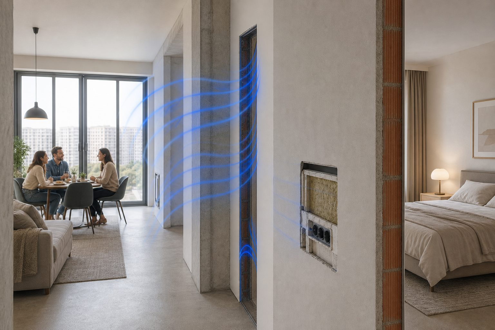
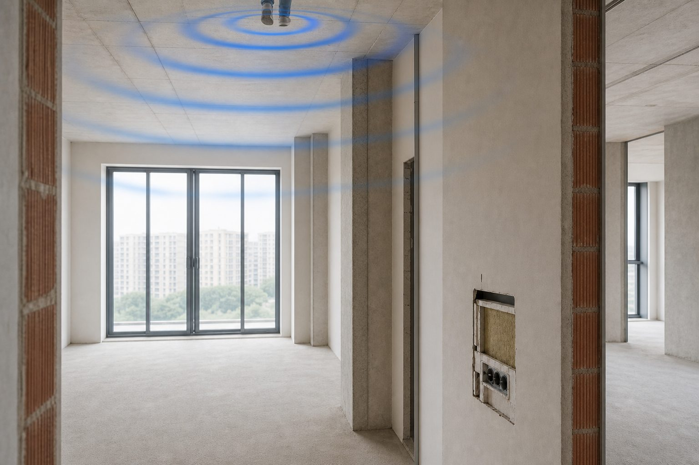
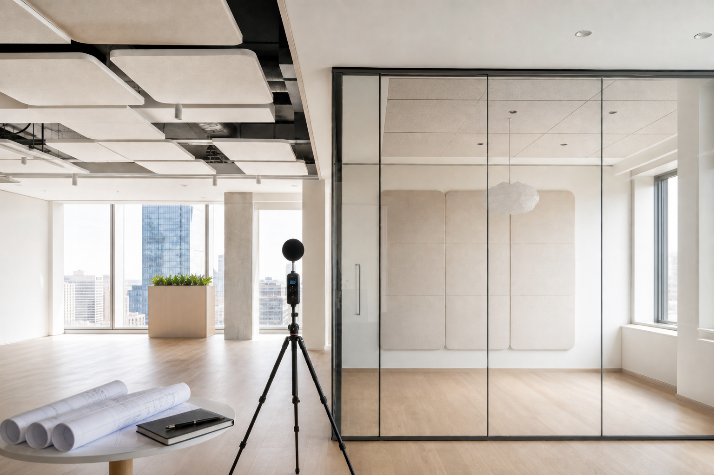
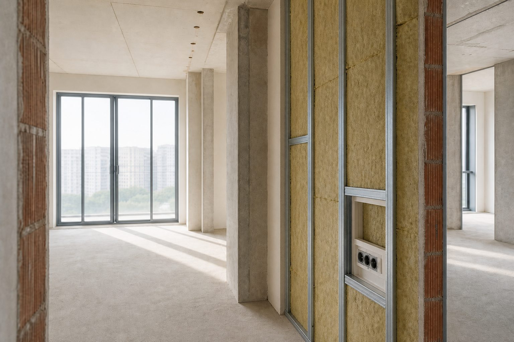
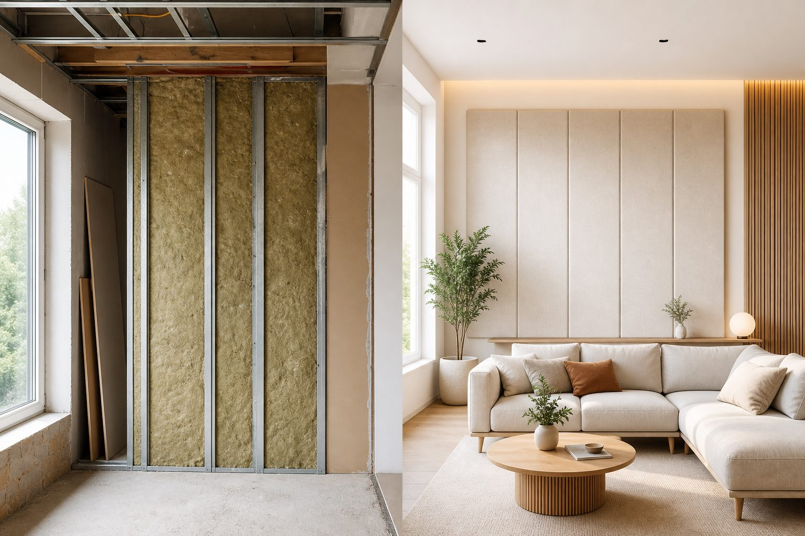
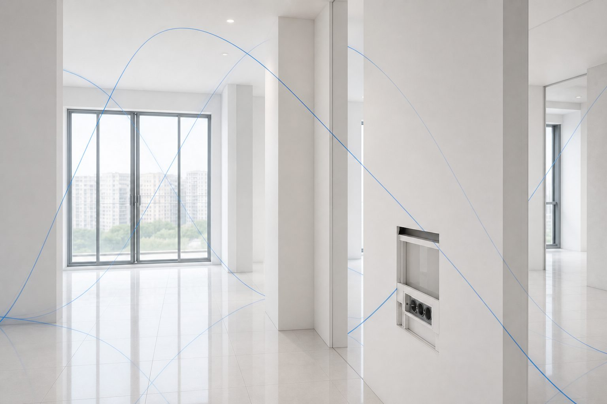
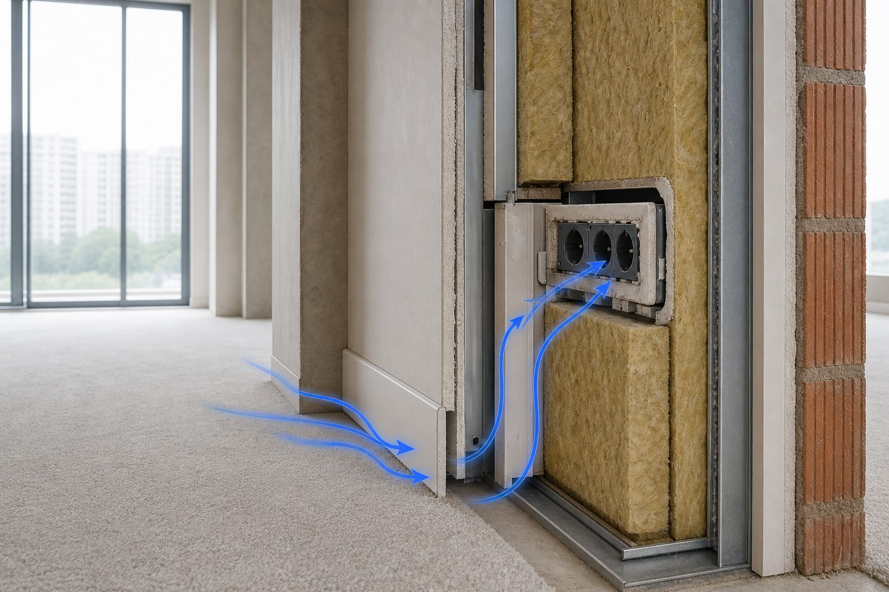
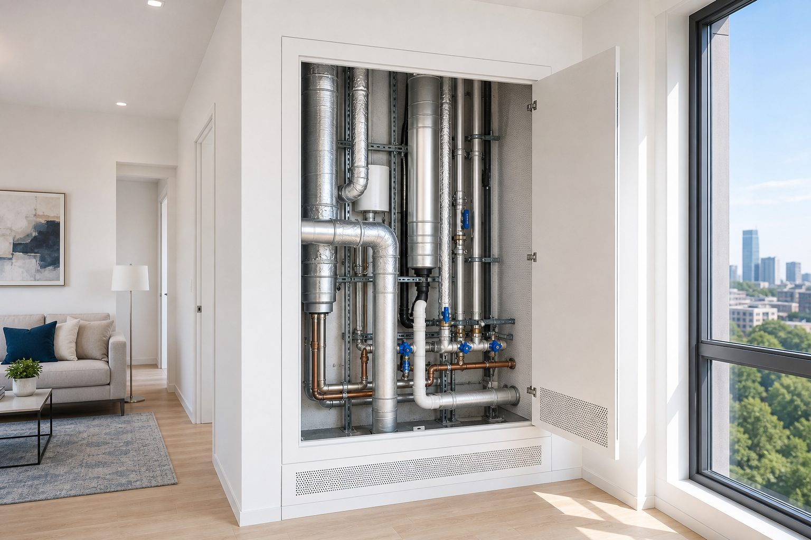
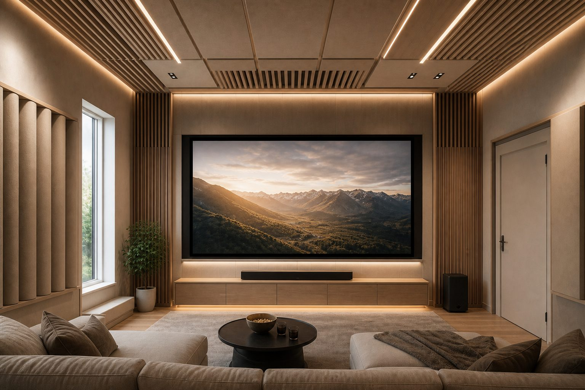
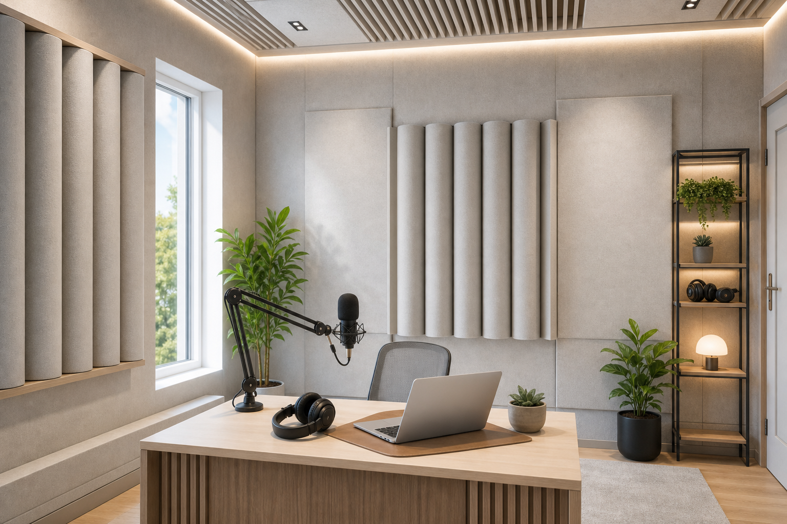

Статьи и ответы
Материалы об акустике помещений: источники шума, обследование, звукоизоляция и проектирование.
Выберите тему

Шум от соседей: с чего начать
Сначала понять путь звука — не покупать материалы вслепую

Ударный шум с потолка
Топот через плиту — не всегда только через перекрытие

Замер и проект: в чём разница
Замер фиксирует факт, проект — что строить и как проверить

Когда подключать акустика при ремонте
Звукоизоляция — часть черновой, не слой «потом»

Звукоизоляция vs акустика
Соседи — ограждения, гул в комнате — внутренняя акустика

Почему гудит комната: эхо и отражения
Звон в пустой комнате — не то же самое, что шум соседей

Акустические мостики и щели
Щель у пола или розетка сводят на нет толстую стену

Шум вентиляции и труб
Гул из шахты — не всегда виноваты соседи

Акустика домашнего кинотеатра
Три задачи: соседи, тишина сцены и звук внутри

Студия подкаста: акустика с нуля
Тишина снаружи и сухой голос внутри — разные работы
Шум от соседей: с чего начать
Хочется купить «звукоизоляцию» и закрыть тему. Звук пойдёт туда, где слабее — щель, розетка, жёсткая стяжка у соседа, шахта. Пока не ясно, что слышите и откуда, бюджет часто уходит не туда.
Воздух или удар — лечение разное
Разговор, телевизор, музыка — воздушный шум. Давит на перегородку, часть энергии проходит сквозь. Шаг, упавший стул, стиралка на жёстких ножках — ударный: удар по полу, вибрация в плите, у вас — глухой стук в потолке или стене. Масса стены против шагов сверху почти не работает. Нужна упругость у источника или развязка потолка снизу — про потолок отдельно.
Часто после усиления стены к соседу топот остаётся: он шёл через перекрытие. Дети бегают и кричат — оба типа разом. Запишите оба ощущения, на объекте это экономит время.
Почему «стена потолще» иногда молчит
В доме куча обходных путей: венткороб, стояк, щель у плинтуса, тонкий участок у двери, розетка насквозь в общую стену. Фланкирование — звук обходит усиленное место сбоку. Типичная картина: тяжёлая перегородка к одному соседу, телевизор всё равно слышен — идёт через потолок или шахту.
Без диагностики легко укрепить не то. Замер сопоставляет ваши жалобы с измерениями и показывает доминирующий путь. Про щели и жёсткие связи — мостики.
Ситуация
Дорогая перегородка к шумному соседу. С другой стороны той же комнаты почти тихо. Первый сосед — как был.
Что проверяет ЦИА
Обход: короб, потолок, примыкание. Карта путей на замере — потом уже материалы.
Пока ремонт не начат
Опишите предметно: «с 23:00 бас из телевизора сверху», «шаги детей — глухой стук в спальне». Откуда кажется: сверху, сбоку, из решётки. План квартиры и фото голых узлов, если уже вскрыли. Дальше — дистанционная оценка или выездной замер, если источник неясен.
После этого ясно: хватит рекомендаций, нужен проект под ремонт или сначала заявка в УК. Проект сразу не всегда нужен. Диагностика отсекает лишнюю закупку. Разница форматов — замер vs проект.
Где ваша зона, а где — дома
Тонкие перегородки, жёсткая стяжка у соседа сверху, общие шахты — часть заложена при строительстве. Полностью «отрезать» соседа через одну тонкую стену нельзя. Говорим прямо: что даст ваша сторона, что потребует соседа или УК.
Потолок снизу часто даёт заметный эффект, не «тишину как в студии». Rw на паспорте материала и то, что услышите в спальне после монтажа, — разные вещи. Цифры без проекта и узлов не обещаем.
Ремонт: время важнее бренда ваты
Звукоизоляция — слои и герметизация на черновой, не плёнка поверх обоев. Удобный момент: видны перекрытия, гипсокартон ещё не закрыт. Этапы — когда подключать акустику. Для квартир привязываем к перекрытию и к тому, какие комнаты критичны.
Короткий журнал
Дата, время, что слышно, откуда. «Пятница, 22:40, гул и голоса из решётки над кроватью» сильнее фразы «постоянно шумно». На замере это стыкуем с цифрами. Если источник — шахта или стояк, а не сосед за стеной: вентиляция и трубы.
Соседи и УК
Гул из шахты, стук стояка, лифт за стеной — не «соседи люди». Проект в квартире лифт не починит, но разделит: что можно у себя и куда писать заявку. Иногда сосед готов обсудить плавающую стяжку, если у него ещё идёт ремонт пола — это реальные 5–10 дБ на шагах, если сделают с лентой по периметру.
Что ломает бюджет
Материалы «как у знакомых» до диагностики. Наклейка на готовую стену без понимания пути. Обещания «минус 20 дБ» без контроля монтажа. Гул своей комнаты, принятый за соседей — там внутренняя акустика, не ограждение. Порядок у нас: описание → оценка или замер → проект при ремонте → узлы до закрытия ГКЛ.
По теме
Шаги сверху — ударный шум с потолка. Голоса без топота — чаще стена и фланкирование, см. также мостики.
Частые вопросы
С чего быстрее всего начать?
С короткого описания и плана. Дистанционная оценка показывает, хватит ли этого или нужен выезд на замер.
Поможет ли ковёр соседу сверху?
Чуть смягчит шаги. Плавающая стяжка с демпфером — другой порядок эффекта. Подробнее — ударный шум с потолка.
Нужен ли проект сразу?
Не всегда. Сначала оценка или замер. Проект — когда уже ясно, какие ограждения трогаем в ремонте.
Ударный шум с потолка
Шаги сверху — частая жалоба. «Топот», «как молотком», «дети скачут». Звук идёт не в воздухе комнаты соседа, а по плите перекрытия. Перекрытие — главный путь, но не единственный: пока это не проверили, легко повесить потолок «для красоты» и почти ничего не снять.
Что происходит при шаге
Нога, мебель, игрушка, стиралка на жёстких ножках бьют по полу. Вибрация уходит в бетон и расходится по плите, стенам, стоякам. У вас потолок и углы чуть дрожат — слышите глухой удар. Это не громкий разговор сквозь воздух. Поэтому даже «не очень громко» бесит: ощущение ближе к удару по корпусу, чем к телевизору за стеной.
Ещё один слой ГКЛ на стене шагов сверху почти не трогает. Нужна упругая прослойка у соседа в полу или система потолка снизу: демпферная подвеска, зазор, тяжёлый слой, герметизация по периметру. Обычный натяжной или каркас без этих узлов — косметика. На смете у подрядчика это стоит проверить до договора.
Почему в одних домах слышнее
Тип перекрытия задаёт базу. Панельная новостройка: тонкая стяжка, керамогранит без прослойки — удар почти без потерь. Старый фонд с деревянными балками — то громче, то тише, зависит от досок и заполнения. Ещё влияют ваши крепления потолка, проходки через плиту и то, как сосед закончил пол.
Частая история: после ремонта сверху шаги стали острее. Сняли старый слой, залили стяжку на плиту, положили плитку без демпфера. Не злой умысел — обычный ремонт без акустики. Если у них ещё не закрыли пол, плавающая стяжка с лентой по периметру — разговор стоит короткого визита.
Ситуация
До ремонта соседей шаги были терпимы. После — слышно каблуки и игрушки на полу.
Что проверяет ЦИА
Сверху, скорее всего, жёсткий пол без демпфера. У вас — проект потолка. У них — плавающая стяжка, если диалог ещё возможен.
Что даёт замер
Замер отвечает: доминирует перекрытие или есть вклад стен, шахт, стояков. Без этого бюджет уходит в потолок, а шум частично идёт через смежную стену с квартирой сверху — угловая комната, общая шахта. Цифру «минус N дБ» замер не продаёт. Даёт карту и приоритеты.
Под ремонт на базе замера пишем проект: конструкция под ваше перекрытие, узлы примыканий, требования к монтажу. Rw из каталога и объект — разные миры; узлы пишем под ваш дом.
Что ломает результат
Каркас «для красоты» без звукоизоляционного слоя: зазор в пару сантиметров на высоких частотах чуть помогает, на шагах — почти нет. Усиление стен, когда жалоба явно сверху. Светильники и розетки в потолке без герметизации — дыры. Ожидание, что сосед «сам поймёт», без потолка в своём ремонте. Жёсткий упор каркаса в стены — мостик по периметру.
Потолок снизу: из чего собираем
Демпфирующая подвеска, тяжёлый слой (часто два ГКЛ с развязкой), поглотитель в полости, герметизация по периметру — потолок не должен жёстко упираться в стены. Примыкания бьют чаще, чем «какая вата». Про дыры и мостики — здесь. Контроль до закрытия: потом вскрытие в разы дороже.
Без согласия соседа
Часто да — потолком с вашей стороны. Идеал — ещё мягкий слой у них под покрытием, но это их зона. На практике «потолок у вас + ковёр у них» даёт заметный, не максимальный эффект. Полная тишина при общей плите и жёстких полах с двух сторон — обещание, которое мы не даём.
Когда заходить в ремонт
До монтажа потолка и чистовой. Каркас, слои, узлы — на черновой. Натяжной уже висит или ГКЛ закрыт без слоя — разбирать или искать компромисс. Этапы — акустика при ремонте. В квартире с шумными соседями сверху потолок часто первый в списке.
Что писать инженеру
Время шагов, комната, где сильнее, разница у стены и в центре, удары от мебели и стиралки. Если стало хуже после ремонта сверху — дата. Отделяет удар от воздуха, который иногда идёт теми же путями. Общий разбор соседского шума — шум от соседей.
Пока ремонт только в плане — дистанционная оценка по плану и описанию. Перед черновой по потолку — замер и проект, чтобы бригада получила узлы до каркаса.
По теме
Диагностика соседского шума — с чего начать. Если гул из решётки, а не шаги — вентиляция и трубы.
Частые вопросы
Поможет ли натяжной потолок?
Сам по себе — почти нет. Нужна система с развязкой и массой; узлы — в проекте после замера.
Можно ли решить без согласия соседа?
Часто да — потолком снизу. Максимум — когда у них ещё мягкий слой под покрытием. Границы говорим на оценке по квартире.
Когда подключать акустика?
До монтажа потолка. Позже — разбор или слабый компромисс. Этапы — акустика при ремонте.
Замер и проект: в чём разница
«Сделайте замер и скажите, сколько децибел будет после ремонта» — такой запрос слышим часто. Замер фиксирует, что происходит сейчас. Проект описывает, что строить и как проверить результат. От диагностики ждут чертежей и прогноза в дБ — её там нет.
Замер: что происходит сейчас
Выезд, согласованные измерения, заключение. Смотрим, откуда шум, какие пути доминируют, есть ли фланкирование через шахты, щели, общие узлы. На выходе — карта проблемы и приоритеты: что усилить первым, что можно отложить, где капитальный ремонт, где локальное решение.
Замер отвечает на «что слышно и откуда». Без детальных чертежей узлов, без спецификации и без обещания «минус 15 дБ». Результат на объекте зависит от монтажа и того, как бригада выполнит узлы. Rw на паспорте материала — образец в лаборатории, не ваша спальня.
Проект: что строить
Проектирование — обследование плюс схемы конструкций, узлы примыканий, спецификация, требования к монтажу. Прогноз появляется, но с условиями: узлы соблюдены, новых дыр нет, есть контрольный замер после. Вопрос проекта — «что строить и как убедиться, что получилось».
Для подрядчика это рабочая документация. «Сделайте потолще» превращается в слои, толщины, крепления, герметизацию. Для заказчика — критерии приёмки заранее. Особенно полезно при ремонте квартиры, когда бригада работает без вас на объекте.
Ситуация
Заказчик хочет «только замер, а проект сделает подрядчик по рекомендациям».
Что проверяет ЦИА
Возможно, если бригада умеет акустические узлы. Риск — разная трактовка фраз вроде «герметизировать периметр». Полный проект снижает споры и переделки.
Когда хватает замера
Локальная задача и ограниченный бюджет — понять, стоит ли вообще вкладываться. Купили квартиру, слышите соседей, хотите оценить масштаб до сметы. Несколько комнат — куда силы первыми.
Ещё раньше — дистанционная оценка: план, фото, описание, взгляд без выезда. Замер на объекте не заменяет, но помогает решить, нужен ли выезд и в каком формате.
Когда нужен проект
Капитальный ремонт с несколькими путями: стена, потолок, проходки. Требования, которые надо зафиксировать для подрядчика. Передача работы бригаде без двусмысленностей. Кинотеатр, студия — почти всегда спецпроект, не «замер с советами». Звукоизоляцию на этапе ремонта лучше проектировать до черновой.
Про деньги
Замер дешевле — объём меньше. Сэкономили на проекте при ремонте на миллионы — часто переделка: не тот слой, пропущенная герметизация, розетка на общей стене. Один демонтаж ГКЛ съедает «экономию» многократно. Замер — диагностика. Проект — строительство.
Спор с подрядчиком и «до/после»
Проект с критериями приёмки и контрольным замером — документ для разговора с бригадой. Замер сам по себе не говорит «смонтируйте вот так» — он говорит «вот что слышно, вот приоритеты». Если спор уже идёт, проект весомее устных рекомендаций. Контрольный замер после монтажа сравнивает «до» и «после» в вашей квартире, не на лабораторном образце.
Как выбрать
Ремонт не ближайшие годы — замер или оценка дадут понимание, стоит ли оставаться и какие варианты есть. Ремонт через месяц — без проекта легко заказать не те работы. Бригада уже на объекте — хотя бы замер до закрытия конструкций. Неясность с шумом от соседей — повод начать с диагностики, не с покупки материалов на маркетплейсе.
Что на руках после
После замера — заключение: карта путей, приоритеты, формат дальнейших работ. Чертежей узлов и спецификации на закупку там нет — это ограничение формата. После проекта — схемы, узлы примыканий, требования к монтажу, иногда контрольные точки. Как герметизировать периметр потолка — в узле, а не «сделайте аккуратно».
Без технического бэкграунда проект ещё и переводит разговор с бригадой: не «сделайте потише», а «смонтируйте по листу 3, проверьте зазор, фото до закрытия». Так реже появляются акустические мостики из-за «сделали как обычно».
Частые вопросы
Можно заказать проект без отдельного замера?
Да. Проектирование включает обследование на объекте. Отдельный замер — когда нужна только диагностика без чертежей, например перед покупкой квартиры.
Есть ли прогноз в дБ в замере?
Нет. Прогноз с условиями — часть проекта. Замер фиксирует текущую картину и приоритеты.
Что дешевле?
Замер. Экономия на проекте при дорогом ремонте нередко оборачивается переделками — и выходит дороже.
Когда подключать акустика при ремонте
Демонтаж, черновая, электрика, чистовая — привычный порядок. Звукоизоляцию в конец этого списка не воткнуть. Она входит в черновую: каркасы, проходки, периметр пола. Вспомнили после ГКЛ — либо дорогая переделка, либо дыры, которые уже не закрыть без демонтажа.
Лучший момент — когда видны «кости»
Акустический проект ставят на стадию планировки или сразу после демонтажа. Видны перекрытия, перегородки, шахты, примыкания. Можно заложить каркасы, правильные проходки для труб и кабелей, узлы — до гипсокартона и чистовых полов. Ещё можно перенести розетку с общей стены, заложить демпферную ленту по периметру, спроектировать потолок с нужным зазором 50–100 мм.
Сначала конструкция, потом цвет стен. Звукоизоляция — не краска поверх готовой стены, а то, из чего стена и потолок собраны. «Добавим вату потом» у подрядчика часто значит один слой без узлов. На объекте такое почти не держит результат.
Как этапы стыкуются
На планировке согласуют зоны: спальня, кинотеатр, общая стена с соседом. От этого — какие ограждения усиливать первыми. На черновой монтируют каркасы, слои, мембраны, герметизируют проходки — до облицовки. Электрика идёт параллельно. Розетки на общих стенах — типичные дыры: планируют до шумоизоляции, не после.
Чистовая — конструкция закрыта, менять без демонтажа нельзя. Отдали электрику «как обычно», акустику подключили, когда ГКЛ уже на стене — классика. Слабые места — в статье про акустические мостики и щели.
Ситуация
Подрядчик смонтировал один слой гипсокартона на стену к соседу. Заказчик вспомнил про звукоизоляцию на следующий день.
Что проверяет ЦИА
Частичный демонтаж или компромисс — дороже и слабее, чем проект до монтажа. Иногда выгоднее остановить бригаду сейчас.
Что передать на старте
План квартиры или дома, тип здания (панель, монолит, кирпич), описание проблемы своими словами, фото голых конструкций — если демонтаж уже был. Ремонт только планируется — часто хватает дистанционной оценки. Перед черновой — замер и проект, чтобы бригада получила узлы до монтажа. Разница форматов — замер vs проект.
Если ремонт уже сделан
Обследование возможно, выбор решений узкий. Незаметно удвоить перегородку при мебели и чистовой — нет. Для квартиры иногда остаётся локальное усиление: потолок снизу при ударном шуме сверху, перегородка в одной комнате, герметизация доступных щелей. Инженер скажет прямо, что реально, а что только через полный демонтаж.
Согласование с дизайнером
Звукоизоляция добавляет толщину стен и потолков — часто +50–100 мм на сторону, иногда больше. Занимает ниши, влияет на высоту дверных проёмов. Дизайнер нарисовал визуализации до акустического проекта — потом переделывают и план, и картинки. Высоты, ниши под каркас, розетки вдали от проблемных стен лучше согласовать сразу.
«Сделаем по СНиП»
СНиП и СП — минимум для массового строительства, не ваш личный комфорт. Перегородка «по норме» в новостройке и тишина в спальне — разные вещи. Целевой уровень при шумных соседях или домашнем кинотеатре выше строительного минимума. Проект как раз фиксирует, что нужно вам.
Сколько времени закладывать
Замер и проект — обычно 1–3 недели, не месяцы. В график — до выхода бригады на черновую. Подрядчик уже ждёт, проекта нет — либо тормозите стены к соседям, либо рискуете переделкой. Для шума от соседей порядок простой: диагностика → проект → монтаж по узлам → контроль до закрытия ГКЛ.
Перед черновой — короткий список
Зоны тишины на плане: спальня, детская, кабинет, медиакомната. Подрядчик получил акустические узлы до каркаса. Розетки на общих стенах пересмотрены — не сквозной монтаж в соседскую квартиру. Проходки труб и вентиляции заложены с герметизацией, не «просверлим потом». Демпферная лента по периметру пола и потолка в смете, не в графе «если останется».
Пункт не закрыт — лучше сдвинуть черновую на неделю, чем вспомнить об акустике на чистовой. Типичная переделка: сняли слой, нашли мостик, переделали узел, закрыли снова — время и деньги ×2. Про слабые места контура — мостики и щели.
Спальня и медиакомната
В спальне чаще критичны потолок при ударном шуме сверху и стена к шумному соседу. В кинозале или студии добавляются внутренняя акустика и виброразвязка саба — формат спецпроекта, не «вата в стену». Один проект на квартиру может закрыть оба приоритета, но толщины и узлы по комнатам будут разными.
Частые вопросы
Можно ли совместить с дизайн-проектом?
Да, так и лучше. Акустику согласуют с высотами потолков, нишами, дверными проёмами и инженерией — до финальных визуализаций.
Подрядчик говорит «сами сделаем по СНиП»?
СНиП — строительный минимум. При шумных соседях или медиакомнате обычно нужно выше. Проект фиксирует целевой уровень и узлы.
Сколько времени до старта черновой?
Замер и проект — обычно 1–3 недели. Заложите этот срок в график до выхода бригады на объект.
Звукоизоляция vs акустика
«Акустика» в быту — всё подряд: и соседи, и эхо в комнате. На практике это два разных запроса. Один — не пускать звук через стены и перекрытия. Другой — убрать звон и грязь внутри самой комнаты. Купили не то — ждёте результат, которого материал физически не даёт.
Звукоизоляция: звук не проходит сквозь стену
Звукоизоляция снижает передачу через стены, потолок, пол, двери, окна. Цель — не слышать соседей и не мешать им. Работают масса, многослойность, упругие прослойки между жёсткими элементами и герметизация. Щель у розетки, жёсткий мостик по профилю, незакрытая проходка — и контур пробит даже при «правильной» вате в каркасе.
Тяжёлая входная дверь, перегородка с зазором, плавающий пол, каркасный потолок на виброподвесах — это звукоизоляция. Материалы сидят в толще конструкции или на границе помещений. Гулку в вашей гостиной они не лечат: они режут обмен звуком с соседом и улицей.
Внутренняя акустика: что происходит внутри
Голос звенит от голых стен? Zoom даёт эхо? В кинозале бас бухает в углах, речь смазана? Это реверберация, отражения, стоячие волны на низах. Лечится формой помещения, поглотителями в нужных местах, иногда диффузорами и расстановкой колонок — не толщиной стены к соседу.
Ковёр и шторы слегка гасят отражения. Соседа за стеной они не отрежут: звук к нему идёт через конструкцию. Про гул отдельно — почему гудит комната.
Ситуация
Домашний кинотеатр: соседи жалуются на бас по вечерам, а внутри комната при этом гулко звенит.
Что проверяет ЦИА
Оба контура: звукоизоляция ограждений и виброразвязка сабвуфера плюс внутренняя обработка — формат спецпроекта.
Обычная квартира
В большинстве случаев запрос — звукоизоляция: соседи, дети сверху, улица. Внутренняя акустика всплывает после ремонта в пустой комнате — неприятно говорить, «как в бане». Иногда хватает мебели. Если нет — считаем поглотители. Симптом «слышу соседей» и симптом «в моей комнате эхо» тянут за собой разные форматы работы.
Студии, кинотеатры, переговорные
Тут почти всегда нужны обе линии. Студия или кинотеатр — и не мешать окружению, и получить чистый звук внутри. Переговорная в офисе требует изоляции от open space; сам open space страдает от гула и плохой разборчивости — это внутренняя акустика, не толстые стены между столами.
В домашнем кинотеатре бас отдельно неприятный: низы обходят тонкие перегородки и уходят вибрацией по полу. Один слой «акустических панелей» на ГКЛ тут ничего не решит.
Быстрые примеры
Металлическая дверь — звукоизоляция. Поролоновые пирамидки на стене студии — внутренняя акустика (и часто ещё и неудачный выбор без расчёта). Двойное остекление — изоляция от улицы. Книжный стеллаж за спиной на видеозвонке — рассеивание отражений. Вата в перегородке — звукоизоляция. Гулкий подкаст в спальне — чаще комната плюс, возможно, ограждения; см. студия подкаста.
Почему маркетплейс путает
Товары с словом «акустические» продают как универсальное средство. Поролон, «пирамиды», тонкие панели на клей — про отражения внутри. Для звукоизоляции нужны масса, зазоры, узлы, герметизация. Это проект, не набор плиток на стену.
Если мешает и то, и другое
Опишите, что слышите снаружи и как звучит внутри. На дистанционной оценке или замере разложим приоритеты: иногда сначала ограждения (соседи мешают спать), иногда поглотители (подкаст с эхом). При капитальном ремонте оба контура можно заложить в один пакет — но слои и узлы разные, смешивать «всё в одну стену» нельзя.
Почему бас отдельный случай
Низкие частоты длинные: обходят тонкие перегородки, идут вибрацией по полу и стенам. Для изоляции баса нужны масса, развязка и нормальные узлы — одного слоя «шумоизоляции» на стене мало. Внутри комнаты бас даёт стоячие волны в углах: гул на отдельных нотах. Домашний кинотеатр с мощным сабом — всегда два контура: не мешать соседям и держать низ внутри. Подробнее — акустика домашнего кинотеатра.
Как не купить лишнее
«Слышу соседей» — конструкции, проект, узлы, герметизация. «В комнате неприятно говорить» — поглотители, расстановка; для серьёзных задач — спецпроект. Набить стену всем подряд «на всякий случай» — лишняя толщина без гарантии. Если соседи — начните с шума от соседей. Если звенит внутри — с почему гудит комната.
Частые вопросы
Помогут ли поролоновые пирамидки от соседей?
Нет. Это внутренняя акустика. Для соседей нужен проект звукоизоляции.
Нужна ли акустика в open space?
Часто да — для разборчивости речи. Переговорные — отдельно: звукоизоляция офиса.
Что заказывать для квартиры?
Обычно проект звукоизоляции. Внутренняя акустика — если отдельно беспокоит гул или эхо внутри, а не соседи.
Почему гудит комната: эхо и отражения
Ремонт закончен, мебели почти нет. Хлопаете в ладоши — звук звенит секунды две. Соседей при этом не слышно. Значит, дело не в тонких стенах, а в том, как звук отражает ваша собственная комната.
Откуда берётся гул
Голос или колонка уходят в воздух и бьются о стены, потолок, пол, стекло. Плитка, штукатурка, стеклопакет — почти всё отражают. В пустой комнате 15–25 м² отражения приходят к уху с задержкой в десятки миллисекунд. Получается звон, эхо, «баня». Мы измеряем это временем реверберации: сколько секунд хвост слышен после хлопка.
Поставили ковёр, диван, шторы от пола до пола — часть энергии поглощается. Гостиная через месяц после переезда обычно тише не потому, что «привыкли», а потому что появились мягкие поверхности. Параллельные стены 3–4 м друг от друга усиливают звон: звук ходит туда-сюда между ними.
Когда гул реально мешает
На Zoom собеседник слышит своё эхо — микрофон ловит отражения от стены в 1–1,5 м. В open space люди устают от фонового гула, хотя никто не орёт. В домашнем кинотеатре речь мутная, бас размазан по углам. В записи подкаста голос «дешёвый» при нормальном микрофоне — комната окрашивает. Во всех этих случаях стены к соседям могут быть в порядке.
Ситуация
После ремонта гостиная «как в бане» — хлопок отдаётся долго. Соседей не слышно.
Что проверяет ЦИА
Внутренняя акустика: поглотители в зоне первых отражений, текстиль, мебель. Если это кинозал с требованиями к звуку — спецпроект.
Что не сработает
«Шумоизоляция» с маркетплейса, приклеенная на готовую стену, — не про гул. Она про передачу через конструкцию. Толстые шторы и ковёр — нормальный бытовой шаг; для переговорной 12 м² или студии часто мало. Поролон стеной до потолка — другой риск: середина частот умирает, низы остаются гулкими, звук становится «мёртвым» и кривым.
Первые отражения
От рта или колонки к уху идёт прямой звук. Почти сразу — отскок от боковой стены или потолка. Эти ранние отражения сильнее всего портят речь и запись. Поглотитель ставят туда, куда бьёт первый отскок — часто на стены по бокам от микрофона или дивана, не «везде ровным слоем». Для подкаста это обычно первый рабочий шаг; детали — в статье про студию подкаста.
Как измеряют
Время реверберации зависит от объёма и того, сколько в комнате поглощают поверхности. В переговорной его укорачивают, чтобы слышать собеседника. В музыке и кино «сухая» комната тоже плоха — пропадает объём. На объекте смотрим импульсными измерениями. В обычной гостиной часто хватает хлопка в центре и у стены: сравните, сколько звенит.
Без ремонта
Ковёр, мягкий диван, шторы в пол, стеллаж напротив дивана — рассеивают и немного поглощают. Для домашнего кабинета этого иногда хватает. Для офиса на 30 человек или комнаты с микрофоном нужен расчёт: где, сколько, какой тип поглотителя.
Переглушение
Панель вплотную к микрофону со всех сторон даёт звук без воздуха. Задача — снять первые отражения, не убив комнату целиком. Панели «на всю стену» без расчёта часто как раз перегибают.
Когда зовут инженера
Переговорная, студия, кинотеатр, open space с жалобами на усталость — здесь проект внутренней акустики окупается. Бытовая гостиная после ремонта: чаще мебель и текстиль; если нет — консультация или спецпроект под масштаб. Постоянный гул из решётки вентиляции — уже не реверберация. Это шум вентиляции, лечится иначе.
Стоячие волны на одной ноте
Между параллельными стенами низкие частоты «застревают». В углах слышен монотонный гул на отдельных тонах — особенно при сабвуфере. Это геометрия комнаты, не «плохая звукоизоляция». Для кинозала и студии низы обрабатывают целенаправленно: бас-ловушки, иногда ниши. В гостиной часто хватает мебели и ковра, чтобы проблема ушла ниже порога раздражения.
Практичный порядок
Хлопните в центре и у стены. Запишите голос на телефон в двух-трёх точках. Эхо только в пустой комнате — текстиль и расстановка. Эхо остаётся при записи подкаста — смотрите студию подкаста. Гул после ремонта у голых поверхностей — обычная история. Не бегите сразу за «шумоизоляцией от соседей», если соседей вы и не слышите.
Частые вопросы
Это из-за натяжного потолка?
Редко. Полотно само по себе мало что меняет. Чаще виноваты голые стены и пол без мягких поверхностей.
Помогут ли акустические панели?
Да, если стоят в зонах первых отражений, а не хаотично по всем стенам. Без расчёта легко переглушить.
Связано ли с вентиляцией?
Постоянный гул из решётки — скорее вентилятор или воздуховод, не реверберация. См. шум вентиляции.
Акустические мостики и щели
Перегородка «как в проекте», материалы недешёвые — сосед слышен почти как раньше. Часто дело не в вате, а в щели у пола, общей розетке или стяжке, жёстко сидящей на стене. Звук идёт через самое слабое место контура.
Что такое мостик
Жёсткая связь, по которой вибрация и воздух обходят мягкий или тяжёлый слой. Пирог с ватой и двумя ГКЛ есть — а профиль прикручен насквозь к несущей стене соседа: вибрация идёт по металлу. Стяжка зашла на стену без демпферной ленты — пол и перегородка стали одним телом. Один слой ГКЛ на общую стену вместо развязанной системы — то же самое, только короче.
После отделки мостики часто не видны. Признаки: шум не там, где усиливали; на замере доминирует неожиданный путь; сняли плинтус — щель. Поэтому в проекте пишем узлы: чем крепить, чем герметизировать — не только «какие марки».
Щели и проходки
Зазор у пола за плинтусом, незакрытая коробка вентиляции, дыра под кондиционер, щель потолка к стене, общая розетка — акустические дыры. Толстая середина стены не спасает, если есть узкий канал. Контур держится по самому слабому звену.
Щель около 1% площади на части спектра даёт потерю порядка 10–20 дБ — зависит от частоты и формы. На практике: метр пирога «в ноль», если у пола 5 мм на всю ширину комнаты.
Ситуация
Дорогая перегородка по рекомендациям, шум остался. Плинтус сняли — щель 5 мм по периметру у пола.
Что проверяет ЦИА
Герметизация примыканий должна быть в проекте и проверена до чистовой. Иногда замер указывает на щель ещё до вскрытия — по картине передачи.
Розетки на общей стене
Подрозетник сквозь перегородку — отверстие насквозь. Воздух в коробке плюс жёсткая связь с соседской стороной. Перенос на другую стену, глубокий короб с герметизацией, напольный блок. Электрику лучше решить до шумоизоляции — этапы ремонта.
Что видим на объектах
Стяжка без демпферной ленты — пол коротнулся со стеной. Один общий профиль на две стороны. Труба без манжеты. Светильник в потолке без герметизации. Дверь без уплотнителя и с щелью у порога — слабое место всего контура комнаты.
Как не сломать в ремонте
Узлы на чертежах, не «на словах прорабу». Контроль на черновой: примыкания, проходки, нет жёстких связей — до закрытия ГКЛ. Фото узлов — страховка при споре. При шуме от соседей нередко материалы были нормальные, а мостик — в одном узле у пола.
После отделки
Иногда без полного демонтажа: щель за плинтусом, уплотнитель двери, локальный короб. Мостик внутри перегородки — вскрытие. Чем раньше нашли, тем дешевле. Замер и осмотр сужают круг.
Фланкирование
Мостики и щели — частный случай обхода основной преграды. Ещё варианты: общая шахта, стояк, тонкий участок у двери. Звукоизоляция квартиры смотрит на весь контур, не на одну стену «в вакууме».
Чек-лист до закрытия ГКЛ
Каркас не посажен жёстко на несущую стену соседа. Стяжка отделена лентой. Трубы и кабели с манжетами. Розетки на общих стенах перенесены или в герметичных коробах. Потолок не упирается в стены без демпфера. Сфотографируйте — при споре с бригадой фото «до» весомее спора «мы же так всегда делали».
Без строительного опыта попросите показать примыкания до чистовой. Один визит в нужный день дешевле вскрытия через полгода. На замере отмечаем зоны риска — куда смотреть в первую очередь.
Почему бригада «делала по опыту»
Профиль к стене, стяжка без ленты, розетки где удобно электрику — нормальная обычная комната. Для звукоизоляции — нет. Проект переводит «опыт» в проверяемые узлы. Без него заказчик и подрядчик спорят словами, а мостик остаётся за плинтусом.
Двери и окна
Тяжёлая стена и тонкая межкомнатная дверь с щелью у порога — слабое звено. В спальне к шумному коридору дверь с уплотнителем иногда важнее третьего ГКЛ. Окно — часть контура с улицы: другой спектр, тот же принцип — слабое место задаёт итог.
В проекте примыкания проверяют до закрытия отделкой — наравне с толщиной слоя.
По теме
Почему «не сработала стена» — часто отсюда, плюс шум от соседей. В потолке те же узлы при ударном шуме сверху.
Частые вопросы
Можно ли закрыть щели потом?
Если доступны — плинтус, дверь, видимые примыкания — иногда да, без полного демонтажа. Внутри перегородки — вскрытие. Дешевле заложить герметизацию на этапе монтажа.
Видно ли мостики на замере?
Косвенно: неожиданный путь, картина передачи. Осмотр и вскрытие узлов дополняют. Одна цифра «дБ стены» мостик не показывает.
Сколько теряется изоляции?
Щель около 1% площади — порядка 10–20 дБ на части спектра, сильно зависит от частоты и геометрии. Одна дыра у пола может обнулить хороший пролёт стены.
Шум вентиляции и труб
В спальне ровный гул, соседей не слышно. Или при сливе стена стучит, а в ванной никого. Не всё — люди за стеной. Часто виноваты воздуховод, стояк, вентилятор в шахте, лифт. Пока путаете это с «соседями», бюджет уходит на стену мимо источника.
Откуда гул и стук
Шахта вентиляции тащит гул вентиляторов и потока. Вентустановки и кондиционеры соседей — вибрация по трассам и креплениям. Стояк при сливе бьёт по хомутам — слышно в соседних комнатах. Лифт за перегородкой — ритмичный низ на ходу кабины.
Два механизма. Структурный — вибрация по жёстким креплениям труб, коробов, плиты. Воздушный — звук по воздуховоду или через решётку и щели в коробе. Лечение разное: виброразвязка и облицовка шахты либо герметичный короб с нормальной проходкой.
Ситуация
В спальне постоянный гул. Соседи молчат. Над кроватью — вентиляционная решётка.
Что проверяет ЦИА
Канал, клапан, герметизация прохода. Иногда — короб в проекте. Решётку скотчем не закрывать: воздух и влажность сразу страдают.
Почему путают с соседями
Оба варианта — «что-то в стене или потолке». Усилили стену, источник в шахте — эффекта нет. Голоса за перегородкой — вентиляция ни при чём. Журнал: когда слышно, что в доме (лифт, слив, ветер). На замере стыкуем записи с измерениями. Диагностика соседского шума — здесь.
Что можно сделать самому
Осмотреть решётки, люки, короба: трещины, зазоры, вибрирующие крышки. Меняется ли шум при своей/общей вентиляции, сливе, лифте. Заклеивать решётку наглухо нельзя — влажность вырастет. Экран, короб, расчётный воздуховод — уже инженерная задача, не «поролон в решётку».
Ремонт
На черновой — герметичные короба вокруг шахт, манжеты на трубах, виброизоляция креплений. Та же логика, что у стен и сроков. После чистовой остаются локальные меры: облицовка доступной части шахты, решётка с лучшим экраном, заявка в УК по общедомовому.
Кондиционеры
Наружный блок на кронштейнах к стене ночью отдаёт вибрацию в конструкцию. Крепление, виброподвесы, место относительно спальни. Трасса через стену — потенциальная щель; проходку герметизируем по узлу. Соседский блок с улицы — другой разговор: экран, переговоры, иногда УК.
Стояк при сливе
Труба бьёт о стенки и хомуты — звук идёт по стояку. Виброизоляция креплений, облицовка шахты с зазором, демпфирующие хомуты вместо жёстких. Стояк в нише у спальни — приоритет в проекте для квартиры.
Зона УК
Общедомовая вентиляция, изношенный лифт, аварийные стояки — инфраструктура дома. При превышении норм заявка обоснована. Проект в квартире шахту целиком не заменит: отделяем, что чинить у себя и куда писать. Щели в вашей зоне — мостики.
Когда звать инженера
Источник неясен после недели журнала — замер дешевле месяцев угадываний. Ремонт и шахта у спальни — короб сразу в проект. «Звукоизоляцию для стены» не покупайте, пока не ясно, что стена — путь.
Журнал
Дата, время, что слышно, что в доме. «Воскресенье, 3:00, ровный гул — лифт ездил». «После слива сверху — стук в стене у ванной». На замере это часто закрывает спор «соседи или шахта» за один визит.
Перед ремонтом — план с решётками, люками, стояками и жалобами по комнатам. Короба и проходки на черновой по проекту дешевле латания после чистовой. Путаница с шагами сверху и гулом шахты — частая причина неверной сметы.
Воздух и влажность
Любое решение по вентиляции должно оставить приток и вытяжку. Заклеенная решётка даёт плесень, не тишину. Короб или экран считаем так, чтобы шум снизить и воздухообмен не убить — часть проекта у спальни.
По теме
Если кажется, что «соседи», а гул ровный — сначала эта статья и журнал; общий разбор — шум от соседей. Обход через щели короба — мостики.
Частые вопросы
Это шум соседей?
Не обязательно. Журнал, осмотр решёток и шахт; если неясно — замер. Ровный гул без голосов часто шахта или лифт.
Поможет ли заглушить решётку?
Ухудшит вентилирование и влажность. Нужен экран, короб или расчётный воздуховод — без полного перекрытия притока.
УК обязана устранять?
По общедомовым системам при превышении норм — да, в зоне УК. Обследование помогает написать заявку предметно, без «у нас громко».
Акустика домашнего кинотеатра
Проектор и 7.1 — ещё не кинозал. Нужно не разбудить соседей басом, не слышать их в тишине сцены и получить в комнате звук, ради которого комнату вообще затеяли. Ограждения и виброразвязка — одно. Внутренняя обработка — другое. Пропускают второе — получается тихо снаружи и «бетон» внутри.
Что реально приходится решать
Не мешать соседям — особенно на низах. Взрыв, долгий гул саба, вечером на −10 дБ от «киношной» громкости — типичные жалобы снизу и сбоку. Не слышать их, когда на экране тишина: шаги, разговоры, лифт. И внутри — чёткий диалог, объём, без гула в углах. Первые две задачи — звукоизоляция и виброразвязка. Третья — внутренняя акустика.
Мощная система без изоляции — конфликт с соседями. Изоляция без обработки — окружение спокойно, комната гулкая. Обычно нужен спецпроект, где оба контура согласованы с расстановкой колонок и саба.
Квартира и дом
В квартире рамки жёстче: нельзя бесконечно утолщать все стены, перекрытие общее, высота потолка фиксирована. В частном доме больше свободы: плавающий пол, массивные перегородки, отдельный уровень под технику. Бас и отражения всё равно считают — просто есть место для манёвра.
Ситуация
Комната 20 м², система 7.1, соседи снизу и сбоку. Ремонт ещё не начат.
Что проверяет ЦИА
Момент для спецпроекта: ограждения, пол, внутренняя обработка, размещение колонок и саба — до черновой.
Выбор комнаты
Подвал или внутренняя комната без соседей с трёх сторон лучше угловой спальни в панельной новостройке. Планировка диктует расстановку: симметрия, дистанция до экрана, отражения от боковых стен. Большое стекло красиво, но отражает жёстко — либо учитывают в обработке, либо сдвигают зону экрана.
Как идём с инженером
Бриф: какая система, насколько громко слушаете, кто соседи, этап ремонта. Обследование: план, конструкции, при необходимости замер. Дальше — ограждения, пол, узлы, внутренняя акустика, рекомендации по технике. Монтаж по узлам с контролем до закрытия. Контрольный замер после — единственный честный способ сравнить «до/после», без цифр из каталога материалов.
Оборудование и комната
Чем громче планируете слушать, тем серьёзнее контур ограждений. Это надо согласовать заранее. Подбор усилителя и калибровка — отдельная специализация; ЦИА закрывает комнату как конструкцию и среду, не AV-инсталляцию.
Что ломает результат
Колонки куплены до ремонта и «как-нибудь повесим». Саб в угол на жёсткий пол без развязки. Звукоизоляция одной стены, когда соседи снизу и сверху. Поролон вместо расчётной обработки — середина убита, бас кривой. Проект отложили до чистовой — потеряли пол и перегородки как ресурс. Щель под дверью и незакрытая проходка — звук уходит в коридор, даже если стены сделаны по проекту. Про слабые места — мостики и щели. Про гул — почему гудит комната.
Когда подключать
Коробка — лучший момент: видны ограждения, можно заложить пол, стены, потолок, проходки. См. когда подключать акустика при ремонте. На раннем этапе — дистанционная оценка по плану, чтобы понять масштаб до сметы.
Пропорции и бас в углах
Низы складываются в углах и у длинных параллельных стен — комната гудит на отдельных нотах. Это внутренняя акустика. Соседи слышат бас не «из вашего угла», а из вибрации пола и стен. В проекте — развязка ограждений и обработка низов внутри: бас-ловушки, позиция саба, иногда ниши. Универсального «угол из инструкции» на объекте нет.
Если ремонт ещё впереди
Напишите: стерео / 5.1 / 7.1, громкость просмотра, кто соседи и с каких сторон, этаж, тип перекрытия. План квартиры — на дистанционной оценке скажем, реалистичен ли зал в выбранной комнате. Для объекта студия / кинотеатр это обычный стартовый сценарий.
Соседи и честные границы
Полная тишина для соседей при мощном сабе в панельной новостройке — задача с условиями: масса, развязка пола, иногда ограничение по времени. Честный проект называет границы. Контрольный замер после монтажа проверяет узлы, а не факт покупки материалов.
Инсталлятор и акустика помещения
Усилитель и калибровка — их зона. Мы описываем, куда можно ставить саб с точки зрения вибрации, какие стены усиливать, где нужны поглотители. Согласование на стадии проекта избавляет от ситуации «колонки уже куплены, стена громкость не выдержит».
Частые вопросы
Хватит ли звукоизоляции без акустики?
Соседей защитите лучше, звук внутри может остаться гулким. Для кинозала обычно нужны оба контура — в спецпроекте.
Минимальный размер комнаты?
Зависит от системы и расстановки. На оценке важнее пропорции и обработка, чем метры сами по себе. 16–20 м² уже можно делать, если геометрия позволяет.
Нужен ли проектировщик домашнего кинотеатра?
ЦИА закрывает акустику помещения — ограждения и внутреннюю среду. Подбор и инсталляция техники — отдельная специализация; проекты согласуются.
Студия подкаста: акустика с нуля
В подкасте слышно и то, что за стеной, и то, что даёт сама комната. Дорогой микрофон в гулкой спальне часто пишет «бетон» — комната вмешивается сильнее микрофона. Звукоизоляцию ограждений и обработку комнаты лучше развести: это разные работы и разные материалы.
Что ломает запись: соседи и эхо
Микрофон ловит оба слоя сразу. Снаружи — улица, семья в коридоре, телевизор за стенкой. Это звукоизоляция: стена, дверь, иногда потолок. Внутри — отражения от голых стен: голос растягивается, появляется «ванная». Панели и расстановка чинят второе. Первое — нет.
Гардеробная с одеждой, ковёр и экран за микрофоном иногда хватают, если пишете днём и требования скромные. Ночная запись, тонкие стены, два ведущих — уже другой уровень. Тогда смотрим спецпроект.
Звукоизоляция: когда без неё запись портит дом
Вечером в квартире с гипсовыми перегородками соседи слышат разговор даже «тихо». Изолируют перегородку и дверь, щели закрывают, при шагах сверху — потолок (шум с потолка). Розетка на общей стене — дыра; про это отдельно: мостики и щели. Закладывать проще на черновой.
Есть и обходы без капитальной стены: другая комната, запись, пока дом тише, временная «кабина» из шкафа. На дистанционной оценке сравниваем по деньгам и по тому, что реально даст тишину.
Ситуация
Подкаст в спальне 14 м². Соседи слышат разговор. В дорожке — эхо.
Что проверяет ЦИА
Перегородка — для соседей. Поглотители у микрофона — для эха. Иногда дешевле уйти в гардеробную 4–5 м², чем изолировать всю спальню.
Внутри комнаты: куда ставить поглощение
Не всю стену. Обычно — бока и сзади от микрофона, где первые отражения бьют в капсулу. Ковёр, плотные шторы, стеллаж с книгами уже режут часть гула. Почему комната «гудит» — здесь.
Пирамидки с маркетплейса без расчёта часто глушат только верх. Низ остаётся гулким, голос — плоским и неровным. Для постоянной студии указываем тип и места в спецпроекте — иначе через полгода снова переклеиваете.
Без ремонта: что проверить за вечер
Одеяло за микрофоном, ковёр, шкаф с одеждой. Нормально для теста формата. На постоянный канал этого хватает ненадолго. Выделить нишу под студию и заложить акустику в ремонт выходит дешевле, чем ломать готовую отделку через год.
Клавиатура, ПК, кондиционер
Всё близко к капсуле слышно. Микрофон дальше от вентилятора корпуса, ось — на рот, не на клавиатуру. Экран на столе помогает. Ровный гул из решётки — не эхо: это вентиляция и трубы, чинится иначе.
Площадь
Один ведущий за столом: часто 6–8 м² при нормальной обработке. Форма и параллельные голые стены решают больше, чем «ещё два метра». Два человека и камера — другой объём, считаем отдельно. На оценке договариваемся, что важнее сейчас: стена, комната или оба.
Как обычно работаем
Сначала дистанционная оценка по плану и фото — понять масштаб. Если идём в ремонт — замер и спецпроект с узлами для бригады. Чем отличается замер от проекта — коротко здесь. Логика близка к студии / кинотеатру.
Что ломает результат
Микрофон до проверки комнаты. Поролон на все стены. Обещание соседям «буду тихо», если стена тонкая и пишете после 22:00. Гул вентиляции, принятый за эхо. Рабочий порядок у нас такой: тестовая дорожка → разговор с инженером → перенос, бюджетная обработка или проект в ремонт.
И рядом кинотеатр
У домашнего кинотеатра та же развилка: сначала не мешать соседям, потом качество внутри. Подкасту не нужен саб на 120 дБ, зато капсула в полуметре от рта — комната слышна острее. Потому внутренняя обработка для голоса часто критичнее, чем «ещё слой на стене».
Дверь в коридор
Перегородка может быть в порядке, а звук уйдёт под дверью и вернётся фоном в записи. Уплотнитель, порог, иногда вторая дверь. На замере это отделяем от чистого эха в комнате.
Если ремонт ещё впереди
Подключайтесь на черновой — когда вешать акустику. Дверь с уплотнением, перегородка без щелей, вентиляция без постоянного гула — это конструкция, не панели «потом». Динамик менее чувствителен к комнате, чем конденсатор: в шумной квартире иногда проще начать с него.
По теме
Эхо внутри — почему гудит комната. Если слышат соседи — шум от соседей.
Частые вопросы
Сколько места нужно?
Для одного ведущего часто хватает 6–8 м², если комната обработана. Метры без поглощения и без двери с уплотнением мало что дают.
Хватит ли акустических панелей с маркетплейса?
На тест — иногда. Без расчёта часто переглушают верх и оставляют гул снизу. Для постоянной студии лучше указать тип и места в проекте.
Это спецпроект?
Если нужны и тишина для соседей, и стабильное качество записи — да. Сначала часто смотрим дистанционную оценку по плану и фото.
Оставить заявку
Опишите помещение и задачу — подскажем формат работы ЦИА. Если вы прошли Проблемомер, поля заполнятся автоматически.
Задача отправлена